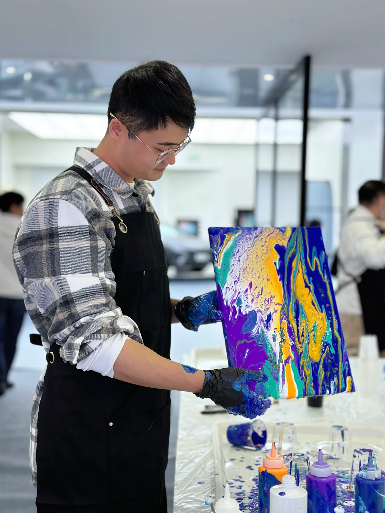
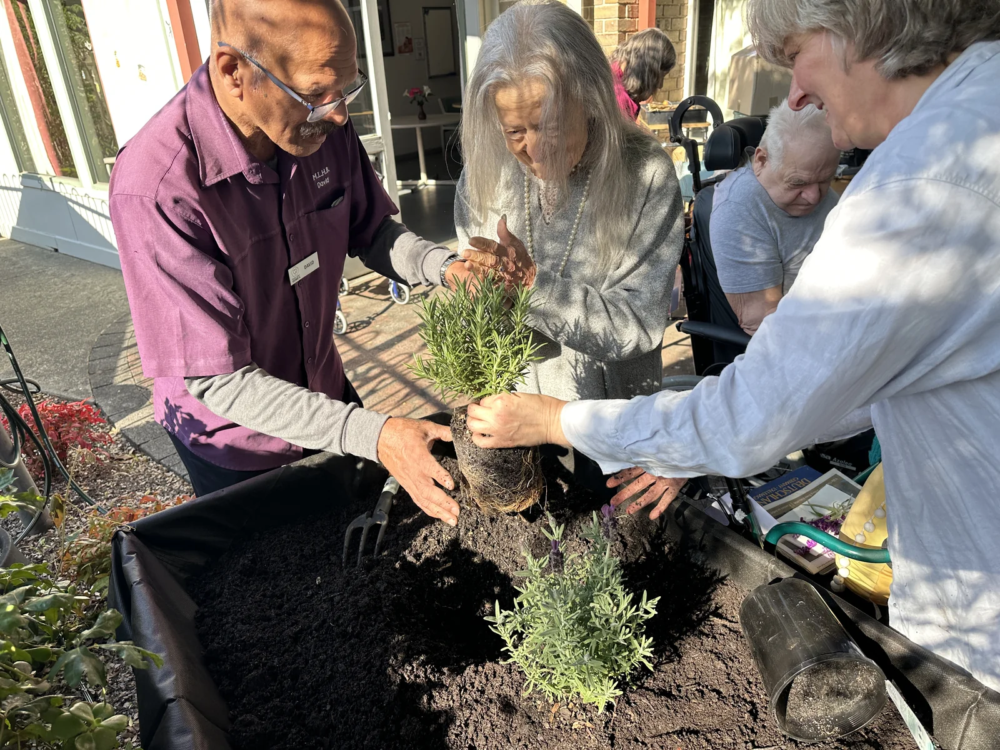
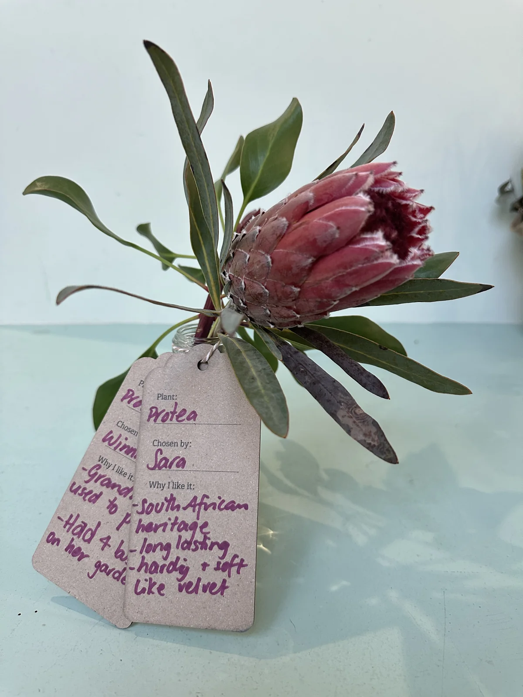
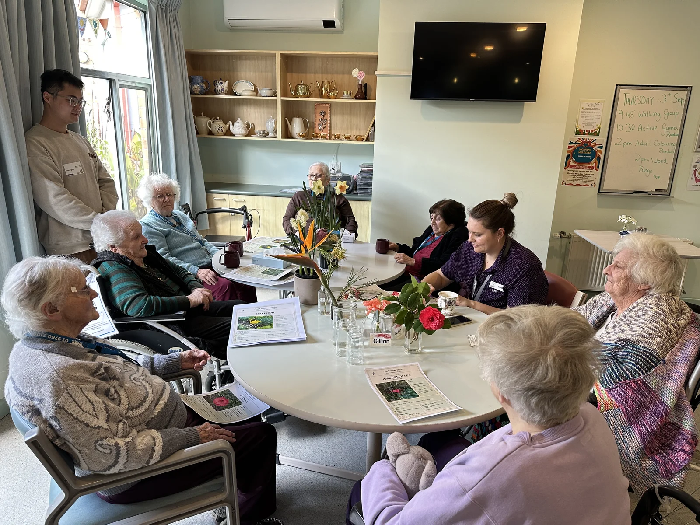
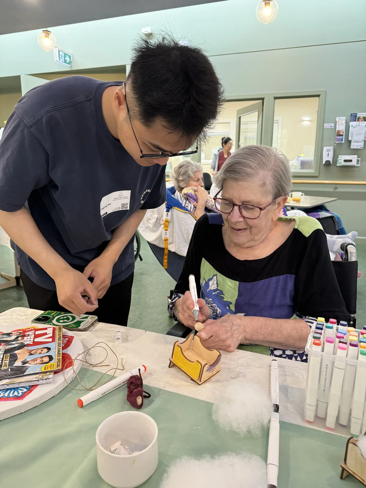
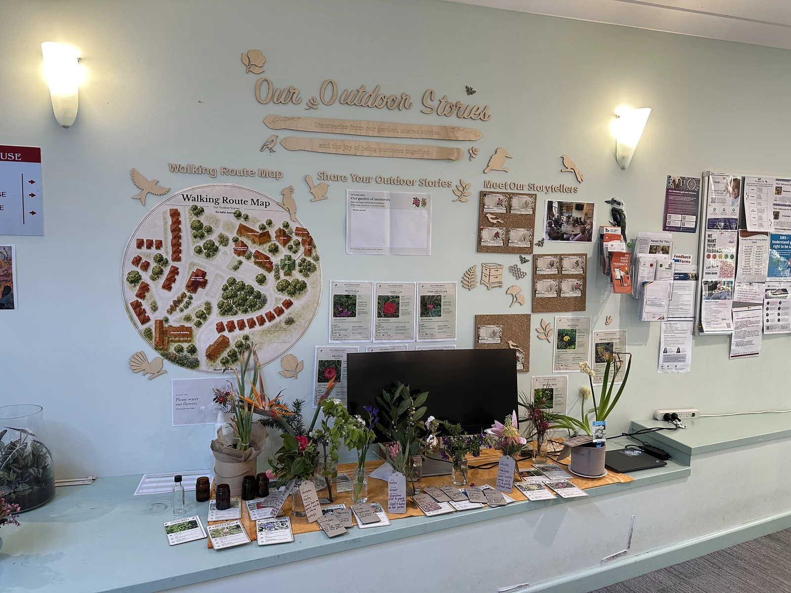

Ageing & older adults
My doctoral research explores shared making, gardening, and outdoor discovery with older adults and care staff.

PhD candidate in Design
Swinburne University of Technology · Melbourne
I’m a design researcher and illustrator working at the intersection of human–computer interaction, participatory design, and everyday life.
My PhD explores outdoor engagement in residential aged care. I work with older adults and care staff through crafting, gardening, and nature discovery to understand how design can support meaningful participation.
My wider research explores human–AI interaction, AI in education, and technology adoption. I collaborate with researchers across design, HCI, education, and related fields, connecting interests in creative practice and learning across generations.
I explore how design and technology can support participation, creativity, and learning, through my doctoral research and wider collaborations.
My doctoral research explores shared making, gardening, and outdoor discovery with older adults and care staff.
Exploring co-creation, social robots, and technology adoption: how people make sense of AI and find a place for it in their lives.
Investigating AI-supported design education, creative identity, and learning across generations.
In my doctoral research, I bring together ethnographic fieldwork, conversations, participatory making, and iterative prototyping. I explore how activities and materials can develop with older adults and care staff, through use and adaptation.
I am interested in how people understand the same technology differently. My collaborative work uses Q methodology to explore art students’ perspectives on generative AI and creative identity, bringing patterns of viewpoints into focus.
My collaborative work explores behaviour and perception through experimental studies and mixed methods. This includes human–machine collaboration, AI-supported teaching, and complementary approaches such as PLS-SEM and fsQCA to investigate technology experiences.
I also explore how reviews and bibliometric approaches can reveal the questions, concepts, and gaps shaping a field. Collaborative work includes game design for older adults, human–AI co-creation, and generative AI in design.
My doctoral research follows the connections between creative activities, outdoor places, and everyday care. These projects bring that work into view.

Shared crafting, brought together in an outdoor Nativity display.

Exploring plants, care, and the rhythms of everyday participation.

From a chosen flower to a personal memory and a shared display.
My research takes shape in shared activities: sitting with a drawing, trying a material together, or talking about the flowers on the table. I work alongside older adults and care staff, learning through these everyday encounters.
Inside the making workshops

Entertainment Computing 59, 101250
Journal of Applied Gerontology · Online first
International Journal of Human–Computer Interaction, 1-28
Education and Information Technologies
In Our Outdoor Stories, I’m exploring how a garden map can connect playful plant discovery with a shared indoor display. A walk becomes an invitation to notice, choose, and tell a story.
Explore the map & plant activities
A familiar path, a flower bed, or somewhere to pause.
Look for a colour, notice a detail, or share what you recognise.
A photograph, a plant, or a few words become part of the shared display.
The walking route map sits alongside plant photographs, handwritten contributions, and fresh flowers, bringing outdoor discoveries into a shared indoor space.
Developing Our Outdoor Stories: connecting garden walks, plant choices, and a shared display.
Bringing together crafting, gardening, and outdoor discovery in my doctoral research.